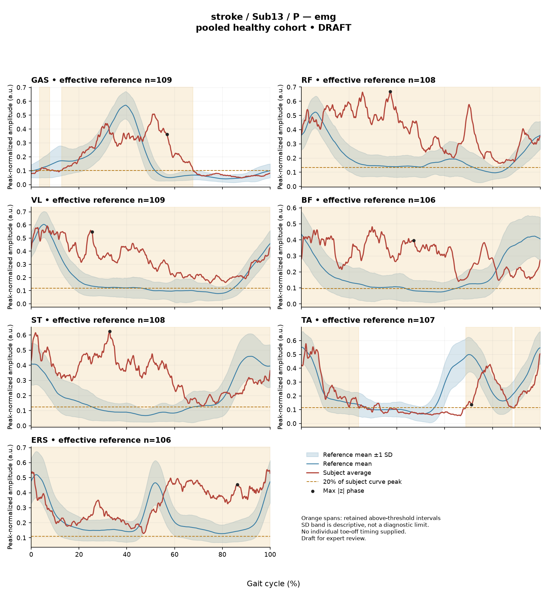

rater2 / Report 46 of 105 / Review spreadsheet row 47
RACE6E7367BC5E74A
Case: stroke_Sub13_P
Read this report independently. Record judgments in the workbook. Browser pages do not save ratings.
Report: exact saved text
# Gait Report Interpretation — Sub13_P **Version:** limited-evidence-v3.1-candidate **Scope:** Research interpretation of a supplied quantitative summary. Not a diagnosis, not a treatment selection, and not a substitute for examination. --- ## 1. Objective Findings **Participant and side.** Sub13_P is a member of the stroke cohort. All data below describe the **paretic** side. The released cycle for this limb runs from one initial contact of the paretic limb (0%) to the next initial contact (100%); these endpoints are successive occurrences of the same event, not a single instant. No intermediate event (including individual toe-off) is supplied, so every timing statement in this report is expressed as a percentage of the analysis cycle only, and no percentage is assigned to a gait phase or sub-phase. **Spatiotemporal values as supplied.** - Gait speed 0.39 m/s, corresponding to the "household ambulator (<0.4 m/s)" speed band. This label denotes a speed band only; it does not measure walking independence, safety, or real-world community mobility. - Cadence 72.7 steps/min. - Step length symmetry index −4.8% (successive-footfall definition: each heel's position at its own initial contact). The negative sign indicates the **paretic step is the shorter** of the two by this index. An instantaneous-heel definition can yield a different value in some subjects; only the successive-footfall value is supplied here. **Reference used and its limits.** Kinematic deviations are computed against 138 pooled healthy subjects (1001 phase points, source: main_cohort_excel). That cohort pools both body sides and all ages and is not age- or speed-matched to this participant. Critically, the healthy reference self-selected speeds span 0.80–1.79 m/s, and this subject walks at 0.39 m/s — **no speed-matched healthy reference exists in this dataset for him.** Any deviation reported below therefore conflates slow-walking effects with stroke-related control changes; these two contributions cannot be separated from these data, and no deviation here establishes a disease effect, a mechanism, or a clinical diagnosis. The same comparability limit would apply to a control subject compared against this reference. **Channels available and not available.** - Supplied: sagittal-plane ankle, knee, hip and pelvis angles (ROM and Gait Variable Scores); averaged EMG envelopes for GAS, RF, VL, BF, ST, TA and ERS; two co-contraction indices; the spatiotemporal values above. - Not supplied in this input: coronal and transverse plane kinematics (the pipeline is sagittal-only); individual toe-off and any other intra-cycle event; muscle-specific matched normal timing references; stride-level (stride-to-stride) data; raw-signal quality checks; expert plots; non-paretic-side EMG. Age, sex, gait-event fields, time post-stroke and stroke clinical scores may exist in the wider release but are not provided to this interpretation and must not be treated as documented absent recordings. - Pipeline note (not subject-specific): the local array audit evaluated 614 of 700 muscle/subject combinations, with 86 lacking valid nonzero paired samples. --- ## 2. EMG Envelope and Threshold Findings **How to read these numbers.** The curves are ensemble-averaged envelopes, normalized to a shared participant-, side- and muscle-specific maximum across available strides before averaging (the denominator is not shared between sides). Amplitudes are therefore **relative envelope values** — not neural drive, force or strength — and muscles cannot be ranked as stronger or weaker from them. An average curve cannot demonstrate stride-to-stride variability, and none of the patterns below can be assumed to recur in every individual stride. "Above-threshold interval" means the *averaged* envelope exceeded 20% of that same curve's own peak for at least 3% of the cycle; it is not a physiological onset, offset, contraction duration, or evidence of inactivity outside the interval. | Muscle | Retained interval(s) | Coverage | Peak norm. amp. | Max \|z\| vs reference | |---|---|---|---|---| | GAS | 3%–8%; 13%–68% | 61% | 0.51 | 12.6, above reference, at 57% | | RF | 0%–100% (across boundary) | 100% | 0.67 | 7.2, above reference, at 37% | | VL | 0%–100% (across boundary) | 100% | 0.59 | 5.5, above reference, at 26% | | BF | 0%–100% (across boundary) | 100% | 0.48 | 4.8, above reference, at 47% | | ST | 0%–100% (across boundary) | 100% | 0.62 | 8.6, above reference, at 33% | | TA | 69%–88%; 89%–24% (wraps boundary) | 59% | 0.58 | 2.9, **below** reference, at 71% | | ERS | 0%–100% (across boundary) | 100% | 0.55 | 4.4, above reference, at 86% | **Interval structure.** Five channels (RF, VL, BF, ST, ERS) are reported with full-cycle coverage and continuity across the cycle boundary at the mean-envelope level. The displayed coverage is rounded; a rounded 100% at this precision does not by itself establish that no sample of the mean envelope fell below the 20% line, and it says nothing about individual strides. GAS carries two retained intervals (3%–8% and 13%–68%) totalling 61% coverage; the regions outside them — including the 8%–13% gap — yielded no interval meeting the threshold-plus-3%-duration rule, which is not the same as demonstrated silence (a shorter supra-threshold segment would have been discarded). TA carries 59% coverage in two retained intervals, one of which (89%–24%) wraps the 100%→0% boundary, i.e. the mean envelope remains above its own threshold across the cycle-defining initial contact; 69%–88% is a separate retained interval, with 88%–89% not retained. Named anatomical actions (e.g. GAS as an ankle plantarflexor, TA as a dorsiflexor, RF/VL as knee extensors, BF/ST as knee flexors, ERS as a trunk extensor) may be noted, but no interval here can be mapped to clearance, push-off or weight acceptance, and none of this timing can be called normal, early, delayed or prolonged — the matched timing references required for that judgement are not supplied. **Max |z| values.** Max |z| is an extreme-value statistic: the largest standardized difference from the phase-specific reference mean across all 1001 phase points. Its location is **not** necessarily the peak of the envelope and is not a gait event. "Above/below reference" refers to the reference mean at that phase point, not to a healthy percentile limit. In this dataset every one of 109 healthy controls exceeds |z| = 2 somewhere, and the per-muscle healthy 95th percentiles for this statistic run from 3.65 (ERS) to 4.61 (TA), higher still under leave-one-out; the conventional 2-SD rule does not apply. Against those anchors: TA's 2.9 sits below the stated TA 95th percentile of 4.61, and ERS's 4.4 sits above the stated ERS 95th percentile of 3.65. GAS (12.6), ST (8.6), RF (7.2), VL (5.5) and BF (4.8) all exceed the upper end (4.61) of the supplied per-muscle percentile range, GAS by a wide margin; muscle-specific percentiles for those five channels are not individually supplied, so the comparison is approximate. Because no speed-matched reference exists for this participant, these magnitudes describe distance from a non-matched reference and do not establish pathology, abnormal activation, or any specific mechanism. **Co-contraction indices.** CCI here is the Falconer–Winter index over the full continuous envelopes (2 × common area / summed areas) across the whole cycle. It is not simultaneous activation time, not force, and not phase-specific; it can be non-zero even when detected bursts do not overlap, because sub-threshold envelope area contributes. It is also method-dependent (normalization and envelope processing), so values and thresholds from other studies or algorithms do not transfer. - **TA vs GAS = 0.46** — inside the healthy interval 0.24–0.59 and above the healthy median of 0.39. - **RF vs BF = 0.83** — at the upper endpoint of the healthy interval 0.48–0.83, and above the healthy median of 0.68. Falling inside the reference interval does not establish physiologically normal co-activation or normal muscle function, and sitting at or outside an endpoint does not establish pathological co-contraction, stiffness, impaired motor control, or a diagnosis. --- ## 3. Kinematic and Reference Comparisons All values are **sagittal plane only**; no coronal or transverse data are included, so nothing here speaks to frontal- or transverse-plane mechanics. | Channel | Sagittal ROM | Gait Variable Score | |---|---|---| | Ankle | 20.8° | 11.28 | | Knee | 48.9° | 15.25 | | Hip | 37.4° | 12.46 | | Pelvis | 5.5° | 4.95 | **Composite (GPS-like) = 11.62** — the RMS of the four sagittal GVS values above. This is not the validated 9-variable GPS and should not be reported as one. Against the supplied calibration distribution (median 5.1, 95th percentile 10.7), this subject's composite is above the median and above the 95th percentile value. That percentile comes from a pooled calibration cohort; it is not a matched leave-one-out normal limit for this participant, and with no speed-matched reference available the elevation cannot be attributed to stroke-specific mechanics as opposed to walking at 0.39 m/s. **Interpretive limits on these numbers.** GVS and the composite are summary magnitudes of difference from the stated reference across the cycle. Neither indicates the *direction* of the waveform difference (e.g. more flexion vs more extension), nor the phase at which it occurs, nor which portion of the cycle contributes most. Within the sagittal channels supplied, knee carries the largest GVS (15.25), then hip (12.46), then ankle (11.28), with pelvis lowest (4.95) — a descriptive ordering of distance from the reference only. No per-joint reference GVS values or normal limits were supplied, so no joint can be classified as normal or abnormal here. ROM values are reported as measured excursions; ROM alone does not establish a clinical restriction in the absence of an appropriate matched comparison, and none is available at this walking speed. --- ## 4. Questions for Further Clinical Assessment These are open questions raised by the limits of the supplied summary. None presupposes that the mechanism or measurement issue in question has been observed, and none should be read as a treatment recommendation. 1. **Event timing.** Can individual toe-off and other intra-cycle events for this paretic cycle be retrieved from the release, so that the retained EMG intervals and the maximum-|z| locations can be placed relative to this participant's own events rather than to cycle percentages alone? 2. **Reference matching.** Is a slow-walking or speed-matched comparison group (or a leave-one-out, age-stratified reference) obtainable? Without one, the elevated composite score and the large EMG max-|z| values cannot be separated into speed-related and stroke-related components. 3. **Signal quality.** Have raw-signal quality checks (electrode placement, crosstalk, baseline noise, saturation, stride count contributing to the ensemble average) been reviewed for this participant — particularly for GAS, whose max |z| of 12.6 is far above the supplied per-muscle percentile range, and for the five channels with reported full-cycle coverage, where a low or noisy within-curve peak would raise the proportion of the curve exceeding its own 20% threshold? 4. **Stride-level behaviour.** Are per-stride envelopes and stride-to-stride variability measures available? The averaged curve cannot indicate whether the reported interval structure (including boundary continuity for RF, VL, BF, ST, ERS and TA) is consistent across strides or driven by a subset. 5. **Contralateral and multiplanar data.** Are non-paretic-side EMG envelopes and coronal/transverse kinematics available? Note that the EMG normalization denominator is side-specific, so any cross-side amplitude comparison would need explicit handling. 6. **Step-length definition.** Would the instantaneous-heel definition change the −4.8% symmetry index for this subject, and is the footfall-detection method documented for the successive-footfall value reported? 7. **Clinical context.** Are age, sex, time post-stroke, and stroke clinical scores available in the release for this participant? None were supplied here, and their absence from this input does not mean they are absent from the source dataset. 8. **Correspondence with examination.** Do bedside findings (passive and active range, tone, selective motor control, sensation, assistive-device use and the conditions under which the trial was recorded) correspond to the sagittal deviations and envelope patterns summarized above? The quantitative summary alone cannot establish a mechanism.
Requirements for this report
Fill the corresponding Coverage rows in the workbook. G03 is included once. These are the approved requirements, not prefilled judgments.
| Excel row | ID | Required content | Components / optional content |
|---|---|---|---|
| 235 | R025 | Describe walking speed 0.39 m/s and that it is below the stated 0.80 m/s reference floor; no reference at this speed is supplied. | AND: displayed speed and that it lies below the 0.80 m/s reference floor, so no speed-supported healthy reference exists in this dataset. Optional: cadence, speed-band label (not a functional claim). One sentence may also serve the comparability half of G03. |
| 236 | R026 | Identify the knee as the leading GVS difference AND convey another lower-limb difference using hip OR ankle. Exact GVS values are optional; identify the findings as reference-relative sagittal summary differences. | AND: knee as leading AND (hip OR ankle). Stating which joint is larger is optional; asserting the reverse order is an error. Exact GVS values are optional; no waveform direction, phase or restriction is required. |
| 237 | R027 | Describe GAS envelope above its phase-specific reference mean at approximately 57% of the analysis cycle (displayed max |z| 12.6). Within each route, muscle identity AND mean-relative direction AND approximate cycle location are required. Exact max-|z| repetition is optional. | Required for each route: muscle identity AND direction relative to the phase-specific reference mean AND approximate cycle location. Optional: exact max |z| value, comparison with the supplied endpoint span (descriptive only). Prohibited: percentile classification, gait phase, physiological onset, severity. |
| 238 | R028 | Describe ST envelope above its phase-specific reference mean at approximately 33% of the analysis cycle (displayed max |z| 8.6). Within each route, muscle identity AND mean-relative direction AND approximate cycle location are required. Exact max-|z| repetition is optional. | Required for each route: muscle identity AND direction relative to the phase-specific reference mean AND approximate cycle location. Optional: exact max |z| value, comparison with the supplied endpoint span (descriptive only). Prohibited: percentile classification, gait phase, physiological onset, severity. |
| 239 | R030 | Describe the supplied successive-footfall step-length index -4.8% and its meaning: the paretic step is shorter. | AND: displayed index and the direction supported by its sign. Optional: formula, definition wording. Acceptable phrasing for small displayed values: "a small difference with the paretic step slightly shorter/longer" (not a cutoff). Prohibited: restating the index as a percentage shortening (E01), severity grades, whole-gait symmetry generalization (E07 issue, not an omission). |
| 240 | G03 | Express a meaningful limitation of reference comparability AND why the comparison cannot establish disease effects or clinical diagnosis; for controls it cannot establish disease or overall normality. One statement may also support a case requirement. | AND: comparability and inference limitations |
Exact model input: system instruction
Draft a research gait-report interpretation for a physical therapist or physiatrist using only the supplied quantitative summary. This is a limited-evidence interpretation task, not diagnosis or treatment selection. Rules: - Describe the participant's actual group and side, available findings, and missing channels accurately. Healthy-group membership does not prove normal physiology; deviations from an empirical reference do not by themselves establish disease. - Treat detected EMG intervals and coverage as properties of an averaged envelope under the stated threshold and duration rule. Do not convert them into physiological onset, offset, duration, continuous contraction, or inactivity outside the intervals. You may describe reported coverage, retained intervals and boundary continuity at the mean-envelope level. Do not infer the same pattern in every individual stride. Say no below-threshold segment only when the supplied evidence establishes that; a rounded coverage value or no retained interval alone does not establish it. - Individual toe-off and matched muscle-specific timing references are not supplied in this task. Use percentages of the analysis cycle. When the input explicitly identifies an initial-contact boundary, you may name that boundary or describe numerical proximity to it. Do not assign stance/swing, loading response, pre-swing, mid-stance or another event to a percentage, or substitute a conventional 60% split. Anatomical muscle actions may be named, but do not map an interval to a gait-phase function such as clearance, push-off or weight acceptance. Do not characterize timing as normal, early, delayed or prolonged without the required evidence. - Respect the supplied normalization method. Relative envelope amplitude is not strength or force, and average curves do not establish stride-to-stride variability. - Report CCI as a whole-cycle overlap index of normalized EMG envelopes. You may compare it with the supplied empirical interval or a supplied median, including proximity to an endpoint. Do not invent an unavailable median. Being within that interval does not establish physiologically normal co-activation or normal muscle function; being outside it does not establish pathological co-activation, stiffness, impaired control or a diagnosis. CCI is not simultaneous activation time, muscular force or a phase-specific result. It depends on normalization and envelope methods; do not transfer values or thresholds from other studies or algorithms. - Describe GVS and GPS-like as summary differences from the stated reference. Neither localizes waveform direction or phase; ROM alone does not establish a clinical restriction without an appropriate comparison. Do not treat pooled calibration percentiles as matched leave-one-out normal limits. - Where using a reference comparison, convey both limited comparability and the inability to establish a disease effect or clinical diagnosis from that comparison. One clear explanation per report is enough; age and speed need not be recited as separate checklist words. A speed inside an overall range does not prove that an appropriate matched reference exists. Apply these limits to controls as well. - The location of maximum |z| is the largest standardized difference from the reference, not necessarily the time of peak envelope amplitude or a gait event. Above/below reference in an EMG row means relative to the phase-specific reference mean at that location, not relative to a healthy percentile limit. - Preserve numerical direction and the displayed precision. Do not invent values, clinical severity grades, statistical significance, or unavailable reference values. Descriptive comparisons with supplied values remain allowed. Near-boundary rounded values do not justify classifying hidden unrounded values. - Clinical follow-up questions may ask whether a mechanism or measurement issue exists; do not presuppose it has already been observed. Do not recommend treatment. If EMG is unavailable, section 2 may simply state that envelope timing, amplitude and CCI cannot be assessed. Reference-only plots do not provide patient EMG. Use exactly these four sections: 1. Objective Findings 2. EMG Envelope and Threshold Findings 3. Kinematic and Reference Comparisons 4. Questions for Further Clinical Assessment
Exact model input: case summary
Candidate interpretation version: limited-evidence-v3.1-candidate
Draft the four-section report using only this subject's supplied evidence.
Metric definitions (read before interpreting any number below):
- All joint angles and ROM values are SAGITTAL PLANE only. Coronal/transverse data are not included.
- The released EMG curves are ensemble-averaged envelopes. For each participant and recorded muscle, normalization uses a shared maximum across the available strides before averaging; individual strides are not independently rescaled to their own peaks. This pipeline uses the released mean curves without further amplitude normalization. In the checked stroke release, the denominator is participant-, side-, and muscle-specific; it is not shared between sides. The local array audit verified 614 evaluable combinations, not all 700; 86 lacked valid nonzero paired samples. Amplitudes are relative envelope values, not absolute neural activation, force, or strength. Do not rank muscles as stronger or weaker from these amplitudes, or infer stride-to-stride variability from an average curve.
- Above-threshold intervals are the regions where the averaged envelope exceeds 20% of that curve's own peak, minimum retained interval 3% of the cycle (by sample count). An interval written as (X%-Y%) with X > Y wraps across the 100%->0% cycle boundary (envelope remains above threshold across the cycle-defining event). An onset of 0% is the analysis-window boundary, not necessarily a physiological onset. "No interval detected" means no region met the threshold + duration criteria; it does NOT mean the muscle is inactive or non-functional.
- CCI is the Falconer-Winter co-contraction index computed on the full continuous envelopes (2*common area / summed areas), so it can be non-zero even when the DETECTED burst intervals of the pair do not overlap (sub-threshold activity contributes).
- The composite kinematic deviation score is the RMS of the per-joint Gait Variable Scores over the sagittal channels provided ("GPS-like", not the validated 9-variable GPS).
- Step length symmetry index: 200*(paretic - non-paretic)/(paretic + non-paretic), in %. NEGATIVE means the paretic-side step is SHORTER. Two operational step-length definitions exist (successive-footfall: each heel's position at its own initial contact; instantaneous: both heels at the same instant) and give different values for some subjects -- the definition actually used is stated next to the symmetry value.
- "Max |z| deviation" is the LARGEST absolute z-score across all 1001 phase points of the cycle, comparing this curve to the healthy-cohort mean/SD at each phase. This is an extreme-value statistic, NOT a single-observation z-score: in this dataset every one of 109 healthy controls exceeds |z| = 2 on at least one muscle, and per-muscle healthy 95th percentiles for this statistic run 3.65 (ERS) to 4.61 (TA) -- higher still under leave-one-out. Do not label a value abnormal by the conventional 2-SD rule; use the healthy reference range given per muscle where provided.
- Healthy-cohort CCI reference (this dataset): RF-vs-BF median 0.68 (2.5th-97.5th pct 0.48-0.83); TA-vs-GAS median 0.39 (0.24-0.59). Composite score reference: median 5.1, 95th percentile 10.7.
- COHORT BACKGROUND (calibration context, not necessarily the exact reference used for this subject -- the actual reference composition is stated in a dedicated line with the subject data below): the full healthy cohort is 138 subjects for kinematics, effective n = 106-109 per muscle for EMG (29 controls have no usable EMG; completeness varies by age), pooling both body sides and all ages; it is not age- or speed-matched to this subject. A leave-one-out run uses one subject fewer than these counts.
- SPEED SUPPORT LIMIT (applies to most stroke subjects in this dataset): the healthy reference cohort's self-selected walking speeds span 0.80-1.79 m/s. If this subject's gait speed is below 0.80 m/s, NO speed-matched healthy reference exists in this dataset -- 41 of the 50 stroke subjects are below that floor. Deviations from the reference then conflate slow-walking effects with stroke-specific control changes, and the two cannot be separated from these data. Describe deviations from the reference as such; do not attribute them wholly to stroke pathology.
- Additional source fields are outside this input. Age, sex and gait events may be available in the release; time post-stroke, stroke clinical scores and a non-paretic-side designation apply only to the stroke cohort, as applicable. Do not claim every listed field exists for every participant. Distinguish not supplied, not applicable and documented absent recordings.
The released paretic-side cycle runs from initial contact of that limb at 0% to its next initial contact at 100%. The cycle boundary may be called initial contact; the endpoints are successive occurrences, not one instant. No intermediate event or phase boundary is supplied.
Model-visible information boundary: the summary contains mean-curve metrics and algorithm-detected intervals, not individual toe-off, matched normal muscle timing, stride-level variability, raw-signal quality checks, or expert plots. Information not supplied here must not be described as absent from the source dataset. Gait-cycle percentages alone do not identify gait phases.
Subject: Sub13_P (group: stroke, affected side: paretic)
Gait speed: 0.39 m/s (household ambulator (<0.4 m/s)) [The ambulation label denotes a speed band only, not measured walking independence, safety or real-world community mobility.]
Cadence: 72.7 steps/min
Step length symmetry index: -4.8% (step-length definition: successive_footfall)
Composite kinematic deviation score (GPS-like): 11.62
Deviation reference actually used for this subject: 138 healthy subjects (pooled), 1001 phase points, source: main_cohort_excel.
EMG envelope findings:
- GAS: above-threshold interval(s) 3%-8%; 13%-68%, 61% of cycle above threshold, peak normalized amplitude 0.51, max |z| vs healthy reference: 12.6 (above reference, at 57% of cycle)
- RF: above-threshold interval(s) 0%-100%, 100% of cycle above threshold, above threshold across cycle boundary, peak normalized amplitude 0.67, max |z| vs healthy reference: 7.2 (above reference, at 37% of cycle)
- VL: above-threshold interval(s) 0%-100%, 100% of cycle above threshold, above threshold across cycle boundary, peak normalized amplitude 0.59, max |z| vs healthy reference: 5.5 (above reference, at 26% of cycle)
- BF: above-threshold interval(s) 0%-100%, 100% of cycle above threshold, above threshold across cycle boundary, peak normalized amplitude 0.48, max |z| vs healthy reference: 4.8 (above reference, at 47% of cycle)
- ST: above-threshold interval(s) 0%-100%, 100% of cycle above threshold, above threshold across cycle boundary, peak normalized amplitude 0.62, max |z| vs healthy reference: 8.6 (above reference, at 33% of cycle)
- TA: above-threshold interval(s) 69%-88%; 89%-24% (wraps cycle boundary), 59% of cycle above threshold, above threshold across cycle boundary, peak normalized amplitude 0.58, max |z| vs healthy reference: 2.9 (below reference, at 71% of cycle)
- ERS: above-threshold interval(s) 0%-100%, 100% of cycle above threshold, above threshold across cycle boundary, peak normalized amplitude 0.55, max |z| vs healthy reference: 4.4 (above reference, at 86% of cycle)
Co-contraction indices:
- TA_vs_GAS: CCI = 0.46
- RF_vs_BF: CCI = 0.83
Joint kinematic findings (sagittal plane):
- AnkleAngles: range of motion 20.8 deg, Gait Variable Score 11.28
- KneeAngles: range of motion 48.9 deg, Gait Variable Score 15.25
- HipAngles: range of motion 37.4 deg, Gait Variable Score 12.46
- PelvisAngles: range of motion 5.5 deg, Gait Variable Score 4.95Reference context for expert review
# Reference context: stroke/Sub13_P Mean/SD reference: 138 controls; method pooled; exclusions: []. Effective reference counts: GAS=109, RF=108, VL=109, BF=106, ST=108, TA=107, ERS=106, AnkleAngles=138, KneeAngles=138, HipAngles=138, PelvisAngles=138. The exact system and user input files define what the model receives. The EMG and kinematic plots are supplementary expert evidence, not model inputs. The plotted mean plus/minus one SD is descriptive, not a clinical normal band. Negative lower EMG bands can result from mean minus SD; they do not imply negative recorded EMG. The max-|z| p95 span in the input is pooled calibration context. Complete muscle-specific LOO thresholds are not supplied; an appropriately indeterminate classification is allowed. Controls are excluded from their own mean/SD reference, but cohort-level calibration has prior reference-data reuse. It is not an independent matched clinical limit. GPS-like is a four-channel sagittal composite, not the validated nine-variable GPS. The pooled median/p95 background is not a matched LOO normality boundary. CCI uses continuous normalized envelopes over the whole analysis cycle. An empirical interval comparison does not establish normal muscle function. Threshold intervals and rounded coverage describe the averaged envelope. Rounded 100% coverage and one interval do not prove absence of short below-threshold gaps. Use the group-specific cycle and normalization provenance in the actual input. No individual intermediate gait events or matched normal muscle timing are supplied. Administrative age and published bilateral speed are not added to this input. Expert-visible plots do not justify requiring unseen direction, phase or morphology. For a new-case requirement, cite exact input evidence. Select clinically useful descriptive content without inferring a diagnosis or severity from rank alone.
EMG and kinematic curves
The curves are supplementary expert evidence. Only the saved text inputs were supplied to the model; do not require curve-only observations.
EMG

Kinematics